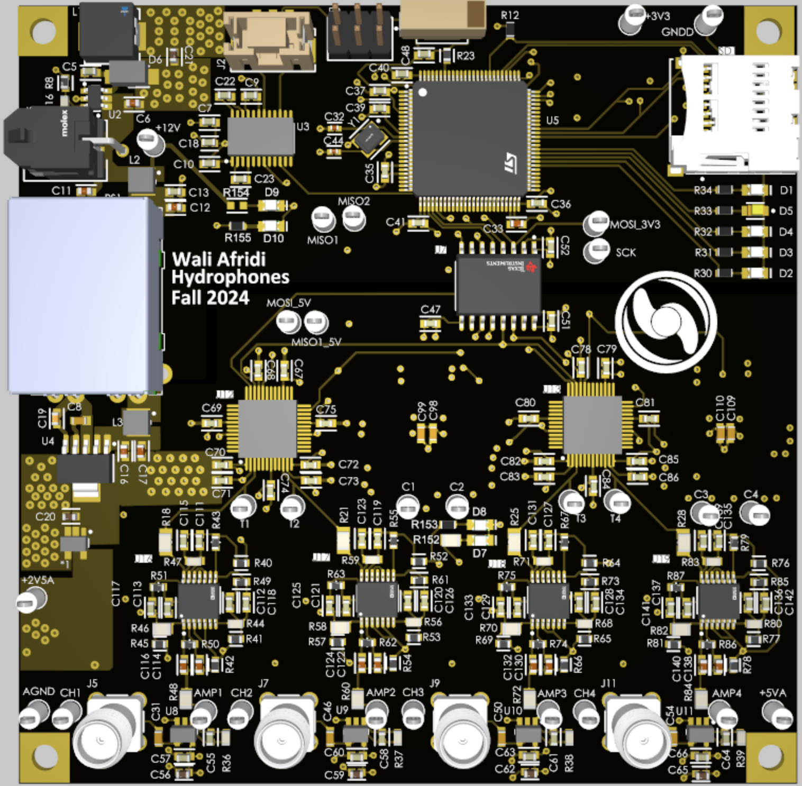
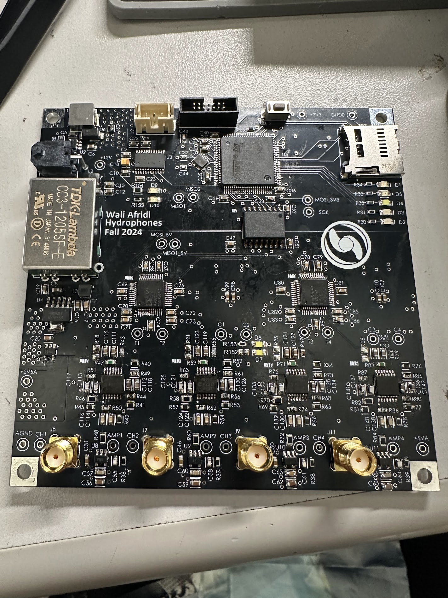
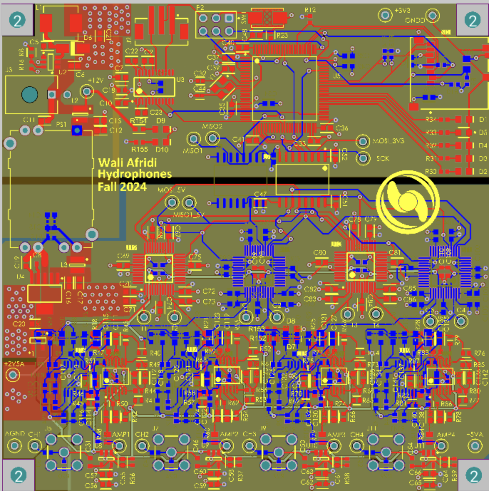
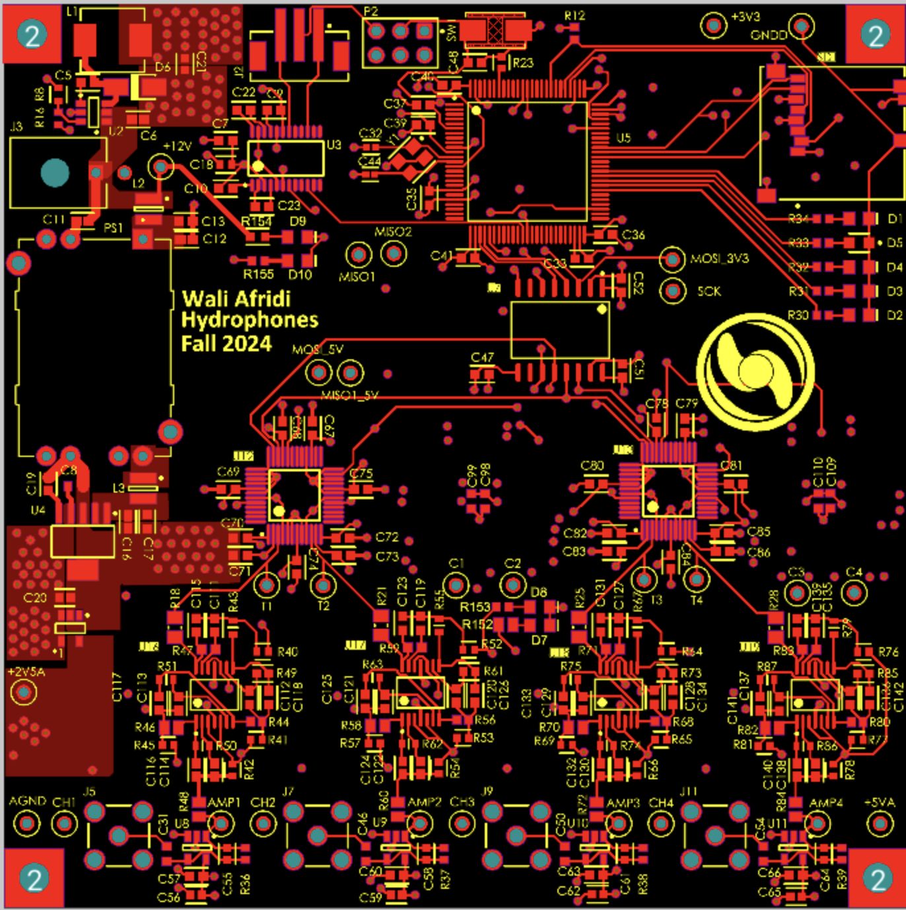
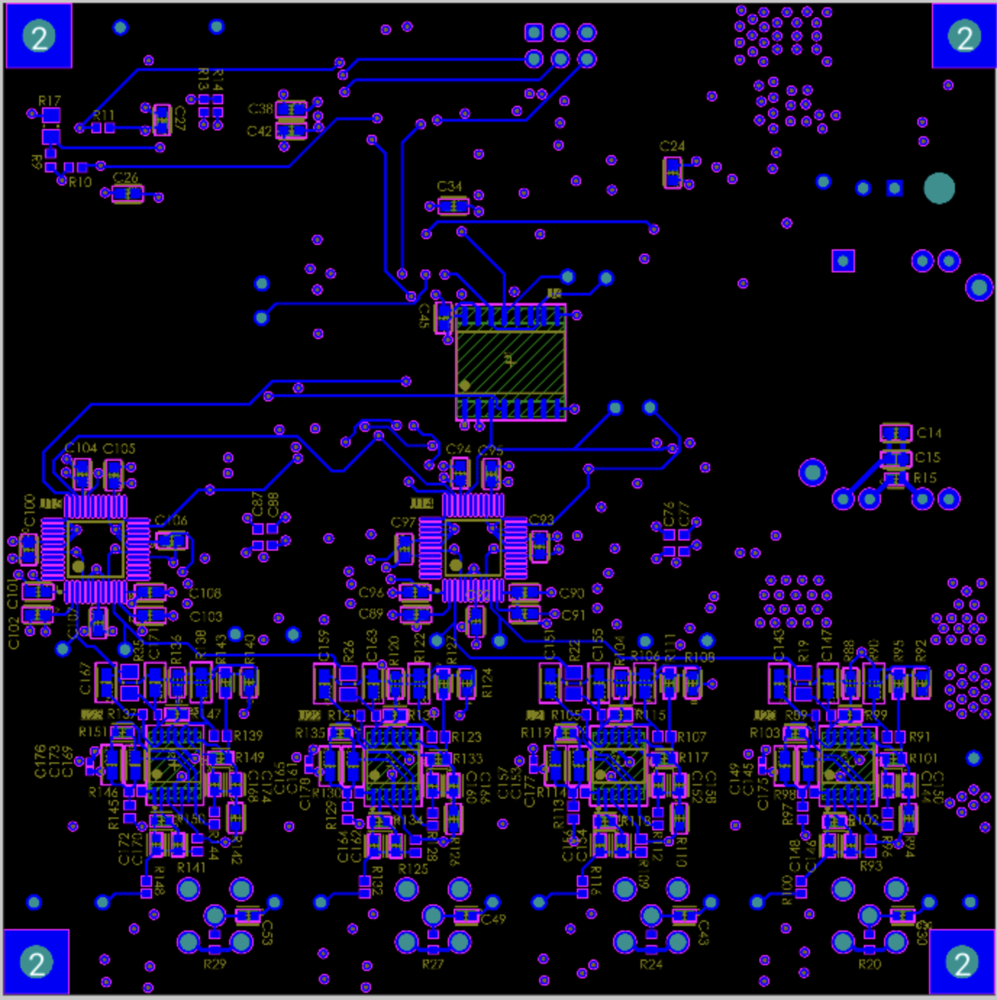
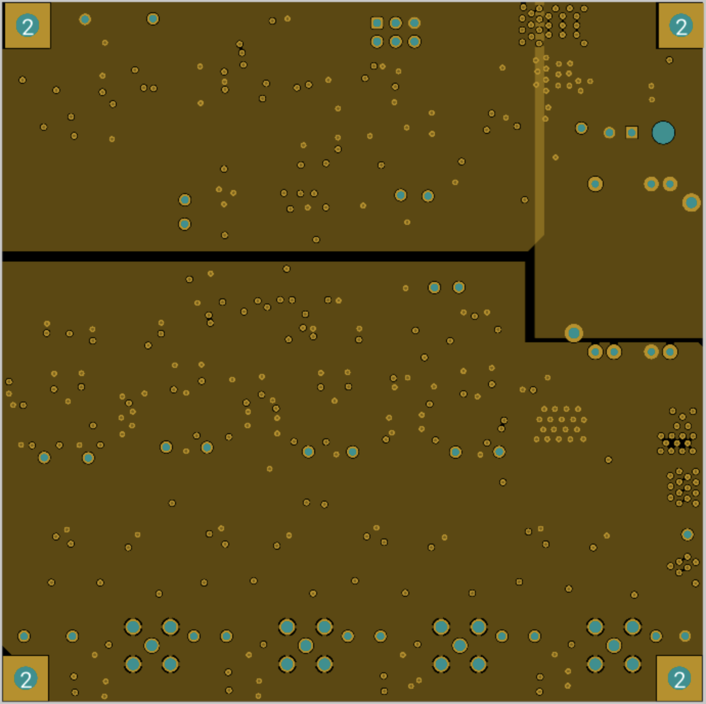
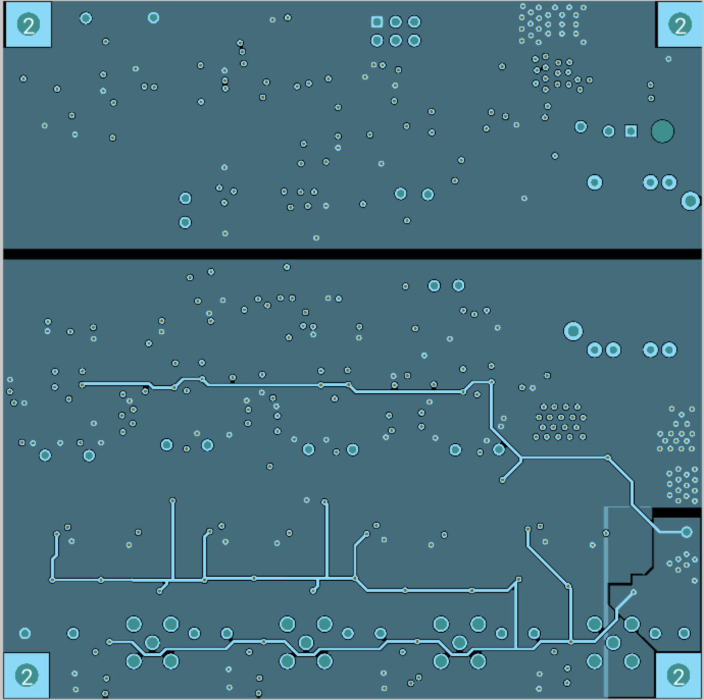

Hydrophones Board

Project Description
The hydrophones board is responsible for acoustic data acquisition and signal processing to enable pinger tracking and inter-vehicular communication. The board takes input from 4 TELEDYNE RESON TC4013 piezoelectric transducers, and outputs critical data regarding pinger direction and recieved data via UART communication to the main submarine computer.
High Level Overview
First, the incoming sound-pressure
signals are amplified using low noise charge pre-amplifiers because they are low
amplitude signals represented by total charge rather than voltage. Then, the
signals are passed through bandpass filters to avoid aliasing and low-frequency rumble due to noise sources
like the AUVs own thrusters.
Each channel has two separate bandpass filters, one with a passband corresponding to
the communications frequency range (46-56kHz), and the other with a passband corresponding to the
pinger frequency specifications (25-40kHz).
After these filters, the two sets of signals, pinger and
comms, are digitized using simultaneously sampling Analog-to-Digital Converters (ADCs) with
programmable gain input stages; the gain loop for the ADCs is run on the MCU based on the strength of the signal of interest to
maximize usage of the ADCs dynamic range. Then, the
samples are processed on the STM32 MCU and information such as the heading toward the pinger
and communicated messages are sent to the Jetson via RS232 serial out of the enclosure. Both signal processing algorithms
utilize the discrete-time fourier transform (DTFT) at a single frequency and are implemented using very simple sines and
cosines accumulators to minimize the memory and compute overhead needed, allowing them to
run in real time.
The board was extensively tested and validated across each step of the signal chain, and has been shown
to successfully locate pingers in water and receive On-Off keyed communications messages from CUAUV's custom ultrasonic transmit system.
Layout Images and Schematic PDF
Hydrophones Board

Hydrophones Board Layout

Front (red) and back (blue) copper


Ground and Power planes

